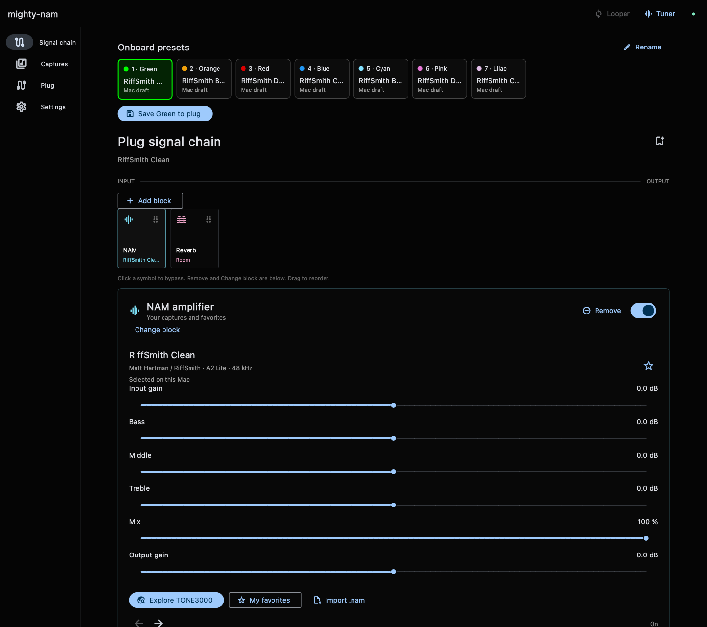
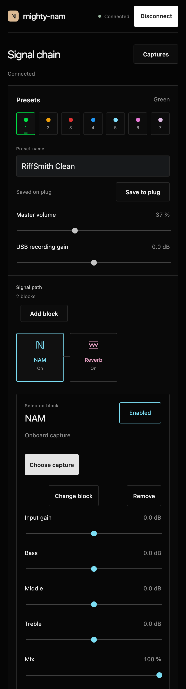
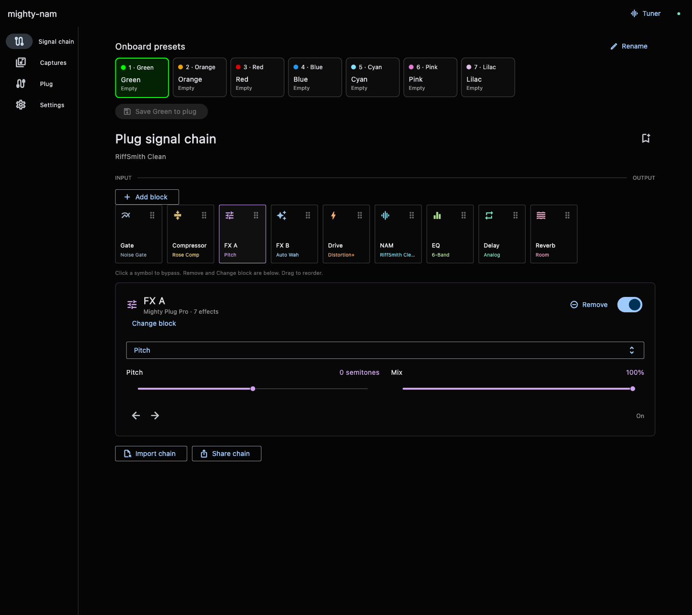
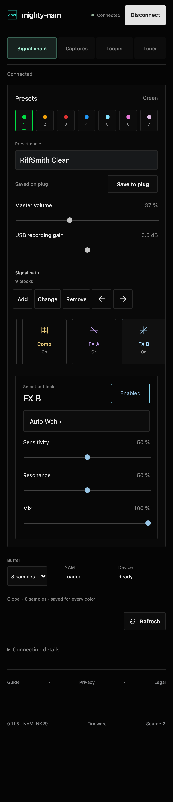

Browse. Select. Play.
Browse TONE3000 for compatible 48 kHz A2 Lite captures. Select one to load it, keep browsing, or save it to a color.
MIGHTY PLUG PRO · A2 LITE · 48 KHZ
Neural Amp Modeler on the Mighty Plug Pro. Edit from your Mac or iPhone, then keep playing without either.
ONE PLUG · TWO CONTROLLERS
Select a block. Its controls sit below the chain.




Browse TONE3000 for compatible 48 kHz A2 Lite captures. Select one to load it, keep browsing, or save it to a color.
FX A and FX B each offer Pitch, Auto Wah, Chorus, Flanger, Phaser, Tremolo and Vibrato. Move either block through your chain alongside stock effects and High / Low Cut EQ.
Pitch shifts −12 to +12 semitones and is intended for single notes.
Each saved color holds a capture and its effects. Select any color in the controller or cycle saved colors with PRESET. Bypass keeps a block; Remove takes it out of the chain.
BUILD LOCALLY · INSTALL WITH NUX
The builder requires MP3_OR_V3.0.5.bin, the Original firmware from NUX’s public Mighty Plug Pro V3.0.5 package. Extract that file from the NUX ZIP, build mighty-nam locally, then install the generated file with the official NUX updater.
Three MIT-licensed RiffSmith A2 Lite presets are included: Clean, Bass Clean and Distorted. Add your own captures to any of the seven colors.
Install the app, connect the plug in normal mode, and open the NAM block to choose a capture.
Mac and firmware guide →Use the free Bluefy browser and the web controller. Add a mighty-nam guitar shortcut to your Home Screen.
Bluefy and shortcut guide →